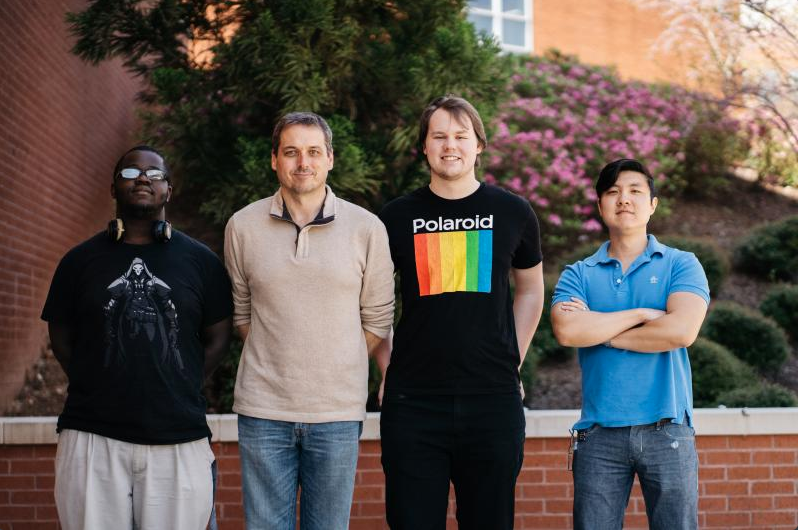
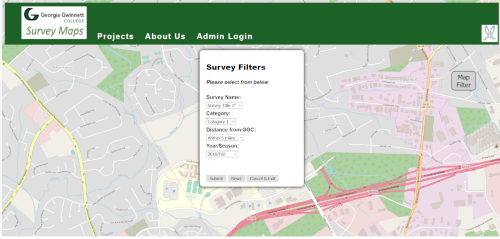

April 29th, 2019: Digital Mapping Website (Input Interactive GEO map)
Created by: (Team HARE) Hugh Smith, Richard Daniel, Andy Plourde, Ethan Kim
About: As part of our Software Development I project Anca Doloc-Mihu, we are working on the Digital Mapping Website project, specifically the input functionality of the ‘Interactive GEO map.’ The user can navigate the map and click on pins representing points of survey data.
Link: A link of documentations and other files. (Check back for more info soon!)

